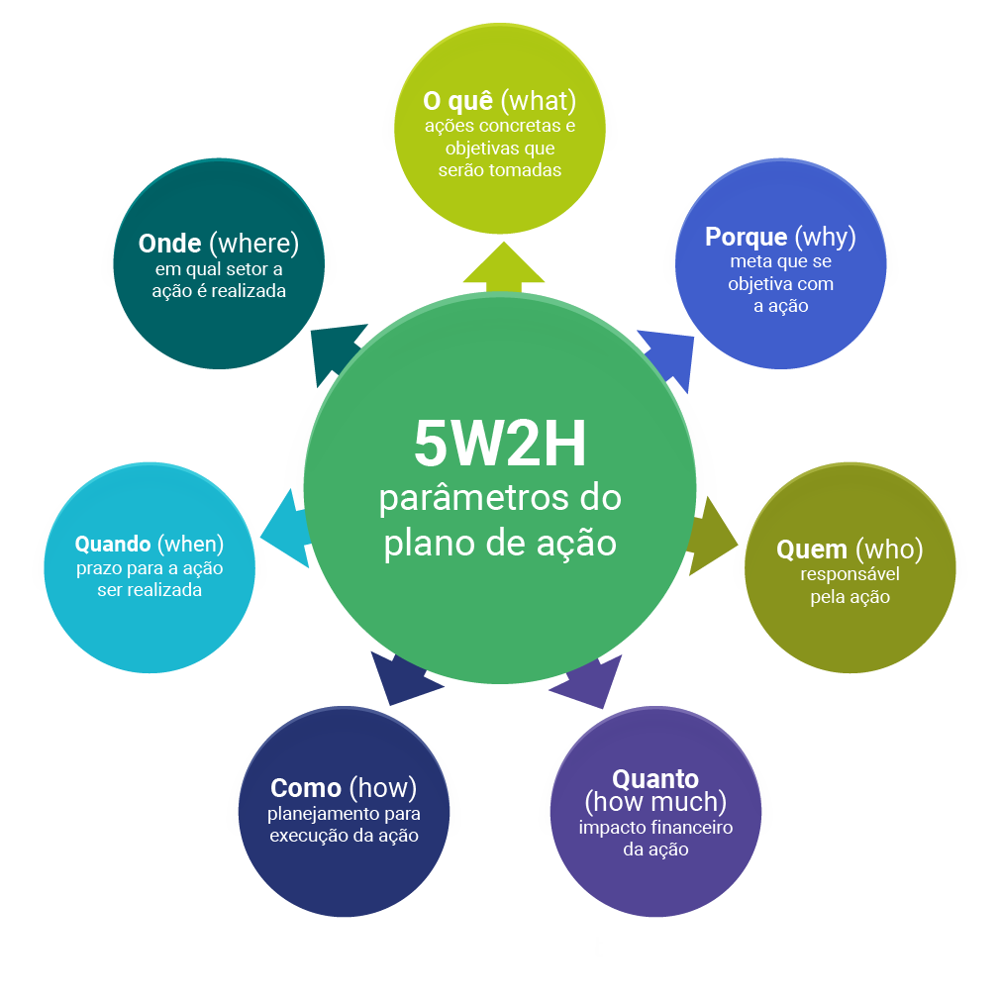

Prof: Fabiola de Carvalho Teixeira
É basicamente uma lista de verificações de determinadas tarefas que precisam ser elaboradas que pode ser utilizada em qualquer empresa quando existe um objetivo, um “o que”, a ser obtido de forma clara, organizada e planejada, onde ficará determinado o que será feito, quem fará o quê, em qual período de tempo, em qual área da empresa e os propósitos no qual esta atividade será exercida. O seu nome não foi por acidente, foi estabelecido por associar primeiro uma sigla que contém todas iniciais em inglês utilizadas neste processo.
Você criará uma Tabela com os seguintes itens:
Há ainda outros 2 tipos de nomenclatura para esta ferramenta 5W2H:
5W1H > sem o “How Much” (quanto custará)
5W3H > que inclui a etapa “How Many” (quantos)
Todas elas podem ser utilizadas dependendo da necessidade do gestor, respeitando sempre as características individuais.
Sim, claro! Acreditamos que nesse instante você deve ter compreendido sobre o que se trata a ferramenta 5W2H. Então, para facilitar a compreender completamente você apresentamos alguns exemplo do 5W2H.